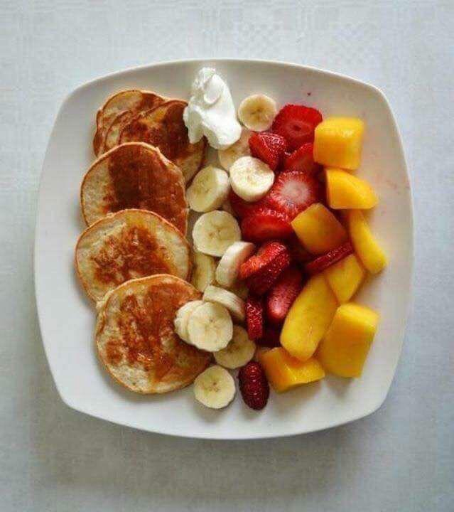
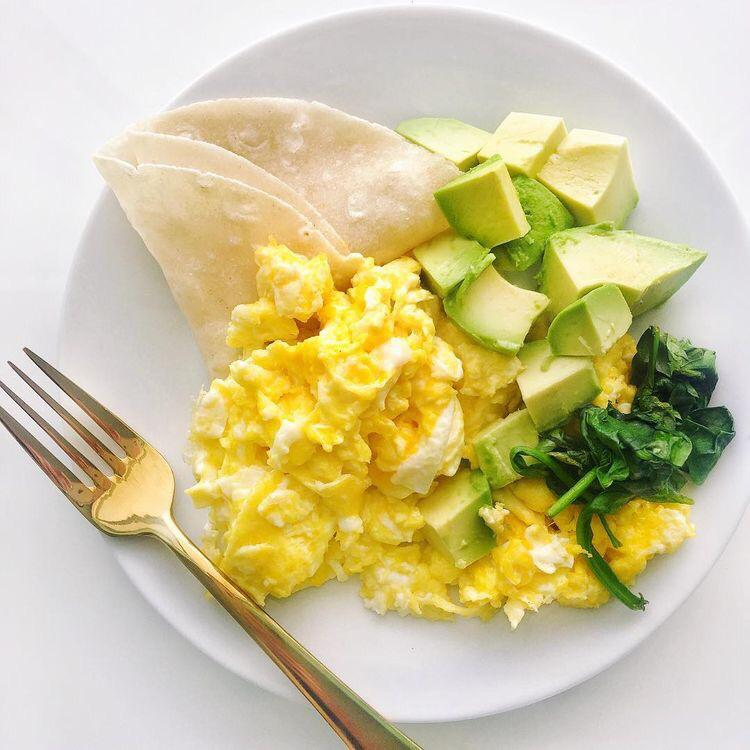
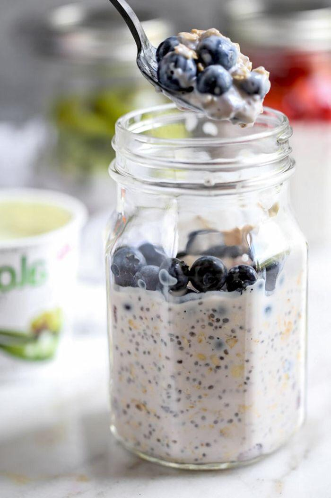

| Tropical breakfast | |
Un desayuno lleno de refrescantes frutas siempre es una bien idea. Las frutas te llenan de energía y son una opción saludable para tu organismo , especialmente por las mañanas. Ingredientes -1 taza de fresas -1/2 taza de mango -1 banano en rodajas -una cucharada de yogurt griego -pancakes de proteínas |
 |
| Avocado lover | |
Para los amantes del aguacate, está es una receta que no puede faltar en tu lista de favoritos. Ingredientes -1 huevo -1 aguacate -1 tortilla de harina de trigo -1/4 de horas de espinaca |
 |
| Sweet blueberry | |
Si te gusta endulzar tus mañanas, no puedes dejar de probar esta combinación de blueberries y avena que te ayudarán a mantenerte satisfecho toda la mañana. Ingredientes -1/2 de blueberries -1/2 de taza de avena -2 cucharadas de chia -2 cucharadas de miel de abeja |
 |